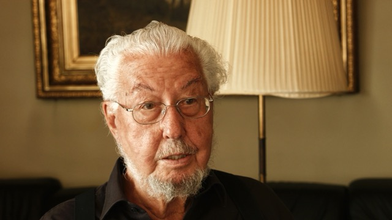

-
C. G. Jung on Alchemy
C. G. Jung on Alchemy
Get full access to the complete documentary series
-

Uncover the secrets of alchemy and psychology. Explore the private rare book collection of Carl Gustav Jung. Filmed at the House of C. G. Jung and Eranos – Switzerland.
C. G. Jung on Alchemy
Chapter 1: Earth (64 min)
Chapter 2: Air (57 min)
Chapter 3: Fire (55 min)
Chapter 4: Water (57 min)
Filmmakers:
Sara Ferro, Chris Weil
-
-

Françoise Bonardel
-

Paul Bishop
-

Murray Stein
-

Aksel Haaning
-

Alfred Ribi
-
Thomas Fischer
-
-
Mind blowing documentary series on Carl Gustav Jung and alchemy by award-winning filmmakers Sara Ferro and Chris Weil, featuring exclusive footage of rare books and manuscripts captured for the first time on video – filmed at the House of C. G. Jung, Eranos and other mystic places in Switzerland.
Five years of meticulous work and research, the series delves into the intricate realms of soul transmutation, the enigmatic Red Book, Gnostic wisdom, the individuation process, synchronicity, archetypes, and more. With an illustrious cast featuring Françoise Bonardel, Paul Bishop, Murray Stein, Aksel Haaning, Alfred Ribi, and Thomas Fischer, the series offers a comprehensive view of Jung’s profound contributions to psychology and alchemy.
C. G. Jung on Alchemy transcends borders, incorporating English, French, and German languages. Its completion marks a milestone in unraveling the hidden dimensions of Jung’s work, enriching audiences with a biographical, historical, and special-interest perspective. The series invites viewers on a captivating journey, unlocking the mysteries that captivated Jung’s intellect and forever altered the landscape of psychology.

Divided into four chapters — Earth, Air, Fire, and Water — the series unfolds over varying durations, providing in-depth insights into each thematic exploration. The documentary stands as a testament to the collaboration with The Foundation of the Works of C. G. Jung.
Explore C. G. Jung’s private collection of rare books and discover the secrets of alchemy and psychology. Fathom the knowledge of the transmutation of the soul, C. G. Jung’s excerpts, the hidden story behind the Red Book, Septem sermones and Gnostic wisdom, Aurora consurgens, the Secret of the Golden Flower, the Individuation process, Synchronicity and archetypes, Goethe - the alchemist, Paracelsus and many more.
One of C. G. Jung’s ground breaking discoveries may be seen that the Trinity, including the God Father, the Holy Spirit and Jesus Christ is in some way incomplete. It lacks nature, it lacks Human. And alchemy offers this missing piece. It will help you to understand the principles of psychology and alchemy from a completely new perspective.
-